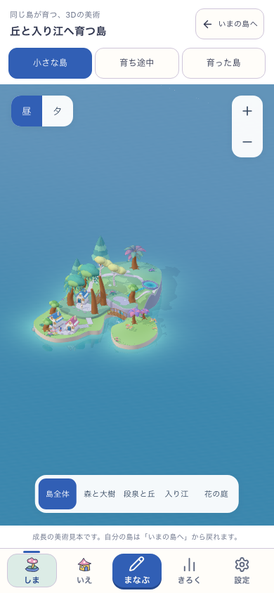
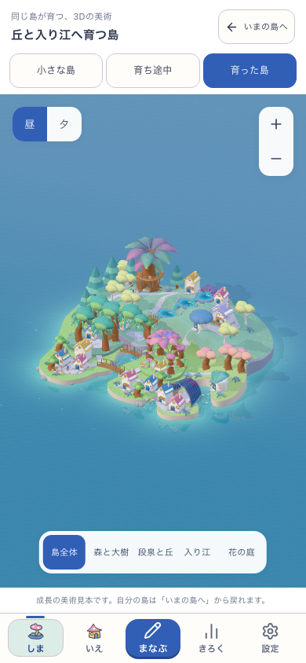
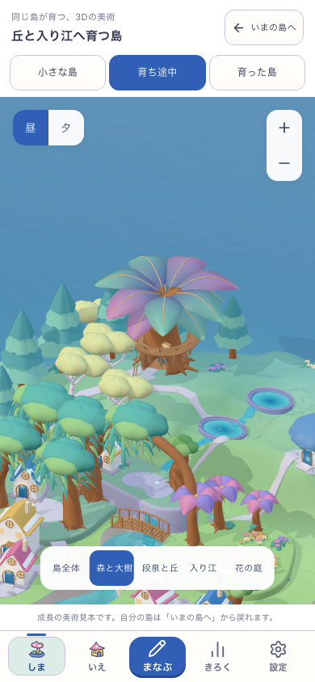
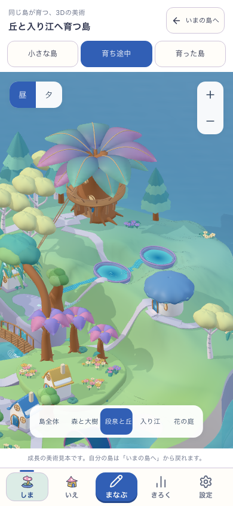
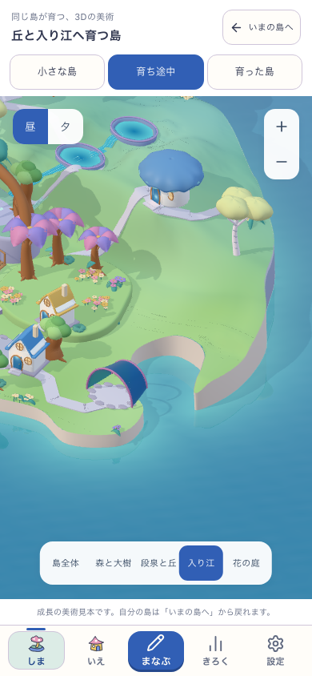
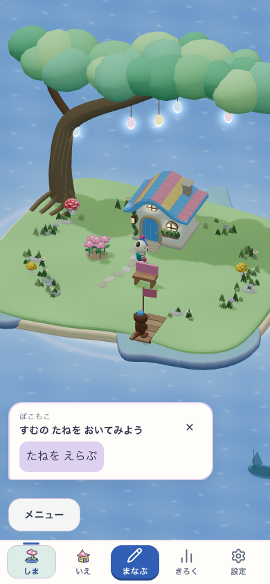
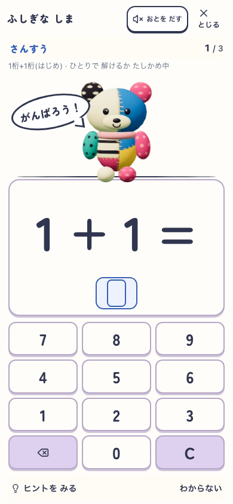
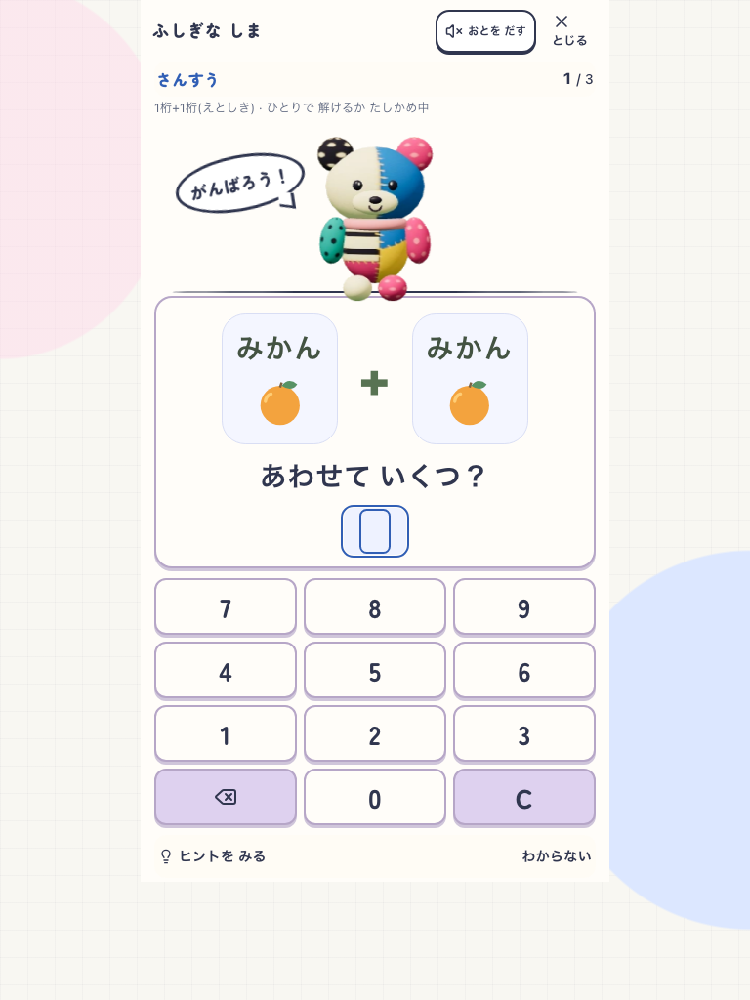
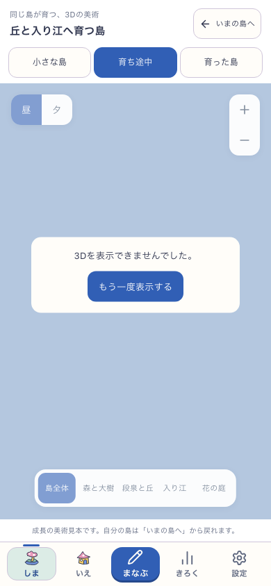
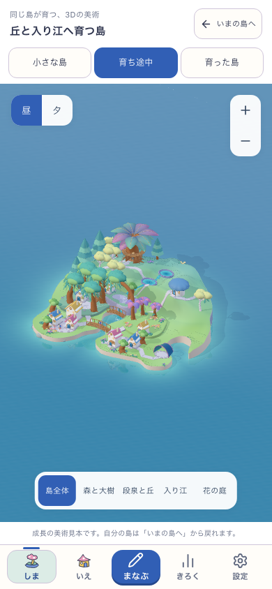

美術確認から、元の島と学習へ。
固定した美術確認buildの実画面。本人の所有島は従来の表示で、美術HOLDのままです。美術見本から通常の島へ戻る境界を示し、同じ美術でゲーム全体を完成した証拠とは扱いません。
スマホ · 全島の形と場所








タブレット · reduced motion



読み込み失敗・再試行・描画中断



美術の新段階の採用、子どもの無説明理解、実機・公開は未確認。制作と検証の範囲